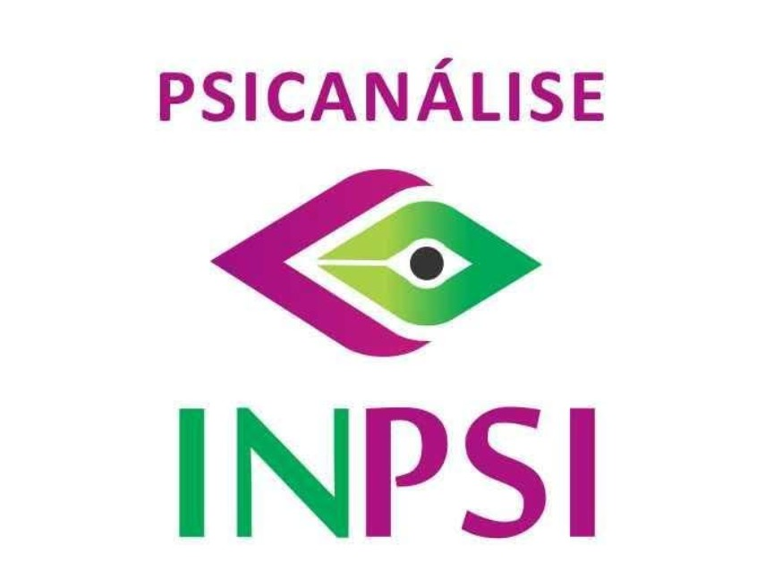

O espaço psicanalítico propõe o vínculo verdadeiro e profundo, mas respeitando o tempo do indivíduo de aproximação, sem invadir. É o lugar do caminho a dois, de descoberta e enfrentamento de si mesmo, podendo rir, chorar, ficar em silêncio, ser quem se é, sem papéis para se proteger ou atender expectativas
Banner INPSI
Conheça nossa trajetória
Formação, estudo clínico e compromisso com a Psicanálise desde 2013.
Ver trajetóriaSeminários e Cursos
Cursos, seminários e grupos de estudo
Encontros online com professores convidados, inscrições e emissão de certificado.
Ver programaçãoPsiCULT
Psicanálise & Cultura
A transmissão da Psicanálise em diálogo com o público, a cultura e a cidade.
Ver transmissãoEstudo e formação
A importância do estudo da Psicanálise
A Psicanálise, fundada por Sigmund Freud, representa uma profunda investigação da mente humana, revelando os processos inconscientes que influenciam pensamentos, sentimentos e comportamentos.
"A psicanálise só pode ser compreendida e praticada através do estudo constante e dedicado dos seus fundamentos teóricos."
Esse compromisso com o aprendizado contínuo permite que o psicanalista desenvolva uma escuta apurada e uma interpretação sensível, fundamentais para a efetividade da análise.
Teóricos fundamentais